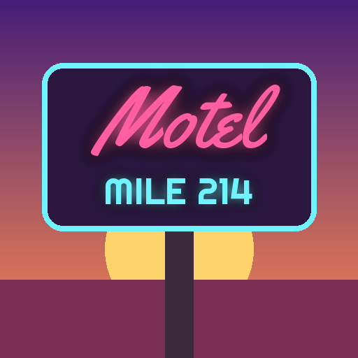

<- all projects

Mile Marker Motel
PC
Volume
Live
Run a roadside motel on Route 12. Never put the band next to the honeymooners.
At mile marker 214 on Old Route 12 stands a motel with a dead neon sign and 12 rooms nobody has cleaned since spring. You bought it at auction, sight unseen, and found a guestbook that starts in 1962. Truckers, couples, families, touring bands, retirees and bikers pull in at dusk, each wanting something different, so choose their rooms with care. Renovate rooms into themed suites and add parking, a pool and more. Every one of the 6 chapters lights another letter of the sign as you learn why the same initials have checked into room 7 on the same night for 60 years.